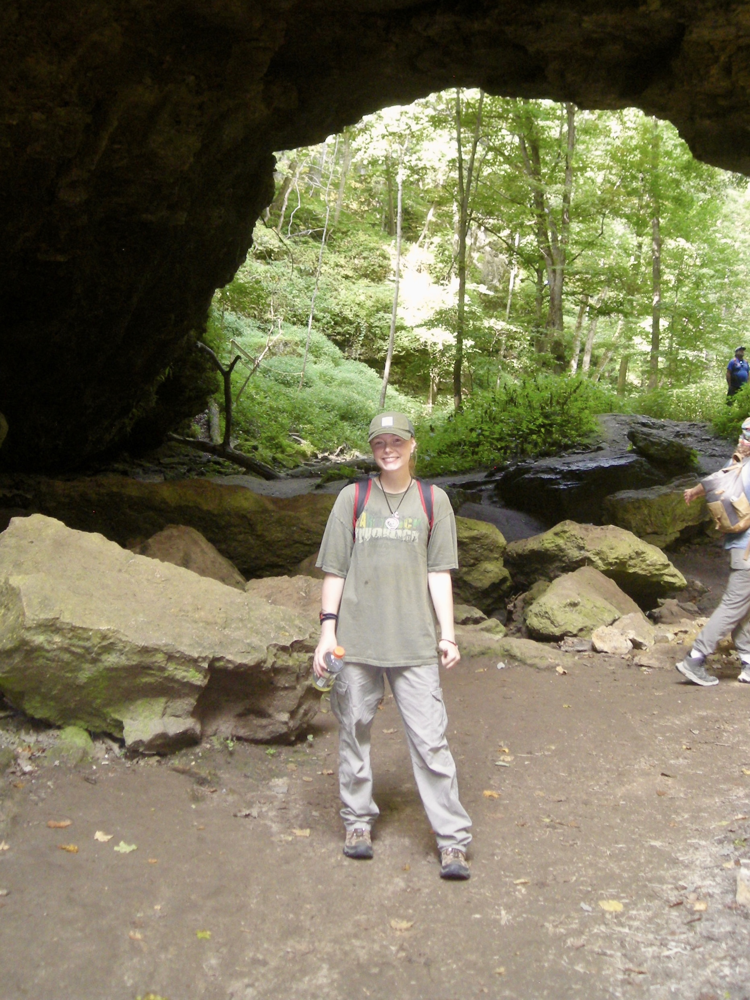

Hello, my name is Katie and I am a University of Iowa student pursuing a degree in Sustainability Science and GIS applications. My interests include cartography, hydrology, arctic ecology, LiDAR, and GIS analysis. I have an educational background in spatial data visualization and GIS processing, which this course has helped expand upon. I currently work as a land surveyor for FOTH Engineering in Des Moines, IA. After college I will continue land survey work, and plan to gain more experience in hydrological projects. In future career opportunities I hope to continue expanding my knowledge in applications for environmental analysis while also pursuing work in environmental justice initatives. Outside of academics I enjoy camping, art, and movies. Travelling is a big interest that I hope to look for in future GIS careers.
Back to Portfolio